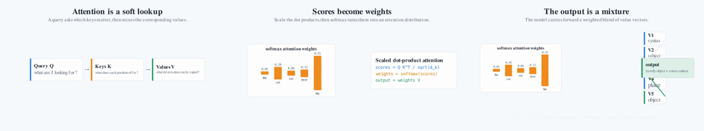
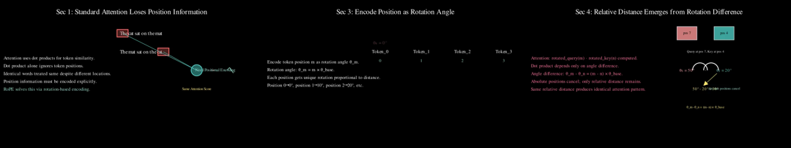
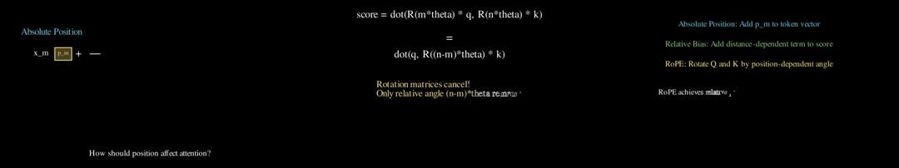
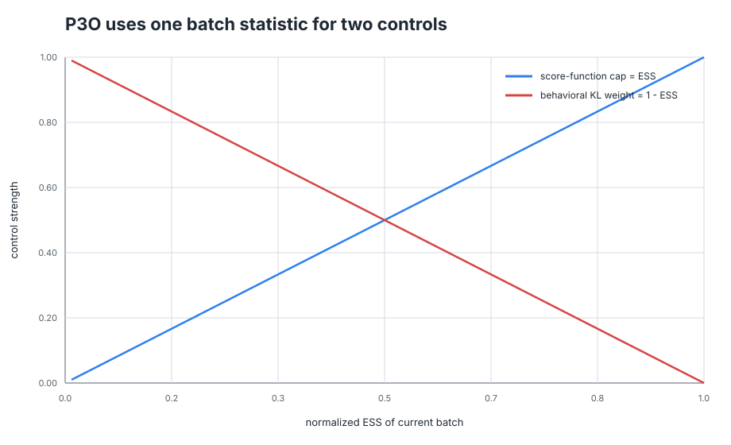
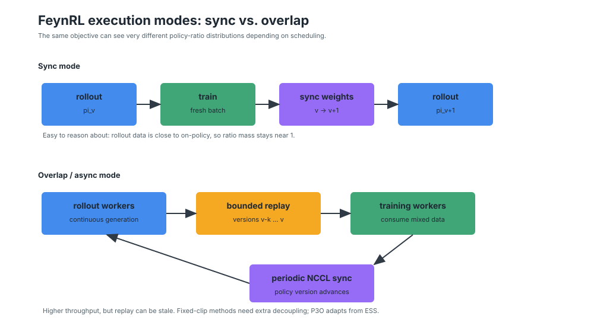

The project is moving from landscape research into a measurable agentic pipeline:
parse paper/code evidence, plan scene-level educational beats, render executable Manim,
inspect frames, repair failures, and keep every artifact reproducible.
5current clip topics
25baseline-style videos
5baseline frameworks tracked
$0API cost in local sweep



Why this route
Motivation
The goal is not to copy a channel identity. The goal is to learn from the Manim
production model: explanations should be precise, editable, rerenderable, and
inspectable. Pixel video generation is impressive, but it is still weak at symbolic
correctness, formula grounding, and frame-level repair.
A paper-with-code explainer needs four synchronized channels: formula, code, toy
example, and comparison. If one channel is missing, the result may look plausible but
fail as teaching.
Current thesis
Use code as the controllable substrate. Use agents for planning, Manim codegen,
log repair, visual critique, and future quiz-based evaluation.
Scene plans before code.
Renderer-in-the-loop as a hard gate.
VLMs review frames, not imagined outputs.
PaperCodeGraph binds claims, formulas, code, toy data, and visual beats.
Paper PDF / arXiv
Code repo
Claim + formula graph
Symbol + function graph
PaperCodeGraph
Scene IR
Manim code
Render + probe
VLM / quiz review
Final clips
References, descriptions, pipelines, examples
Framework References
This section is not the full 5-clip coverage grid. It is the reference landscape:
what each baseline is, what its original pipeline emphasizes, and where it fits relative
to our paper-plus-code target. The actual coverage status lives in the Coverage Matrix.
Paper-to-Manim
Paper2Manim / ManimAgent
Most aligned with paper-section to Manim generation. The useful idea is a
storyboard-to-code path with vision checking and a future positive/negative memory bank.
paper sectionstoryboardscene coderendervisual repair
Best practical baseline for staged educational video generation: planner, coder,
debugger, critic, and TeachQuiz-style evaluation. It starts from a knowledge point,
not a full paper plus repo.
topicoutlineManim codedebugcritic
Missing: paper ingestion, source-code mapping, and structured Scene IR repair.
LLM2Manim pushes symbol ledgers, segmentation, and human review. ManimTrainer
shows why renderer-in-the-loop and API-doc retrieval matter before training.
The original papers and repos use different pipeline figures and terminology. Below is a
normalized view so we can compare them without confusing framework-specific labels with
actual capability coverage.
Paper2ManimPaper section to storyboard
paper sectionscene storyboardManim coderender fixervision checkermemory bank
Original emphasis: VLM keyframes populate positive examples and known pitfalls across tasks.
Our missing piece: formula-code-example-comparison grounding before Manim code generation.
Paper cases
Representative baseline videos we can show now
These are examples, not complete coverage. Code2Video currently covers three paper
families; Paper2Manim has one full RoPE output; TEA is still preview-only here.
This update adds run manifests for the local baseline-coverage sweep. The sweep uses
deterministic style previews, so API cost is zero; a real WInE/GPT/Claude/Gemini sweep is
still blocked locally until provider credentials are available.
Baseline coverage sweep, 5 topics
Framework styleVideosRenderDurationAPI cost
Paper2Manim538.34s45.0s$0
Code2Video535.26s45.0s$0
TEA style532.89s45.0s$0
LLM2Manim527.13s45.0s$0
ManimTrainer533.61s45.0s$0
Source: `runs/baseline_coverage/manifest.json`. Total: 25 videos, 225.0s video duration, 167.23s local render time.
Historical WInE planning previews, 3 topics
FrameworkElapsedPromptCompletionTotal
Paper2Manim style30.02s2,8453,6376,482
Code2Video style37.32s2,7464,4817,227
TheoremExplainAgent style90.35s2,7919,65612,447
Source: WInE preview JSONs for FeynRL, RoPE, and Transformers using `wine-claude-haiku-4-5`.
Rendered Code2Video runs
TopicRenderVideoTokensKnown gap
Transformers4/4118.06s31,154wall time missing
FeynRL / P3O4/4133.60s33,424wall time missing
RoPE4/449.33s26,852wall time missing
These runs used real upstream Code2Video generation with feedback disabled. Combined generation tokens: 91,430.
VLM review cost proxy
Six contact-sheet reviews with `wine-gemini-2.5-flash` used 20,196 total tokens,
including 9,151 image tokens and 7,190 hidden reasoning tokens. Each review is cheap
enough to run often, but the hidden reasoning budget is large enough to log explicitly.
Missing now: provider price table, cache billing, wall-clock render time, and retry accounting.
What exists now
Current v0 Pipeline
The local suite proves that we can render, probe, inspect, and review compact Manim
clips. The clips are not final teaching artifacts yet. They are controlled evidence that
the loop works.
v0 execution loop
Specs in JSONRobust Manim scenesLow-quality fast renderffprobe + frame samplingContact sheetWInE/Gemini VLM reviewRecorded next edits
ClipDurationJudgmentNext gap
FeynRL / P3O ESS14.27s3/5derive ESS and bind to code
DPO preference objective11.73s4/5define symbols before formula
Scaled dot-product attention11.40s3/5animate QK and softmax
Transformer core11.47sstoryboardsplit attention heads and positions
RoPE rotation16.53sstoryboardworked relative-dot example
In-house
FeynRL / P3O ESS
Ratio table, ESS gauge, and P3O objective pieces.
In-house
DPO objective
Best current first-watch storyboard, still needs symbol grounding.
In-house
Attention softmax
Weighted lookup intuition, missing the actual dot-product computation.
In-house
RoPE rotation
Formula-by-formula candidate for a longer position-embedding series.
Baseline coverage run
Five Topics Across Five Framework Styles
The missing coverage pass is now filled at the baseline-style level: five current clip
topics, five framework planning styles, and 25 short MP4s with manifests. These are not
full upstream framework runs yet. They are controlled, comparable renders from each
framework's planning contract, ready to be replaced by real API-backed outputs as each
stack comes online.
FeynRL / P3O ESSrendered5 / 5 videosCode2Video full run; other stacks are style previews.Bind formulas to `external/FeynRL` code and rerun with real providers.
DPO objectiverendered5 / 5 videosNo full upstream baseline yet.Run the model-comparison harness once API credentials are available.
Attention softmaxrendered5 / 5 videosStandalone spec added; no full upstream run yet.Use as a small geometry/aesthetics metric test case.
Transformer corerendered5 / 5 videosCode2Video full run; other stacks are style previews.Use this for GPT / Claude / Gemini model comparison.
RoPE rotationrendered5 / 5 videosPaper2Manim and Code2Video full outputs exist.Run TEA full output and expand baseline-position subclips.
25coverage videos generated
225stotal playable video duration
167.23slocal render wall time
blockedreal WInE sweep needs API key
Every card below has an MP4, contact sheet, and run manifest. The label "style preview"
means the video is rendered from a framework-specific planning schema, not from that
framework's full upstream code path.
Paper2Manim
Paper2Manim: five-topic coverage
Baseline-style renders generated from this framework's planning contract. Full upstream execution is tracked separately.
FeynRL / P3O ESS
7.5s, style preview, manifest logged.
DPO objective
10.0s, style preview, manifest logged.
Attention softmax
10.0s, style preview, manifest logged.
Transformer core
7.5s, style preview, manifest logged.
RoPE rotation
10.0s, style preview, manifest logged.
Code2Video
Code2Video: five-topic coverage
Baseline-style renders generated from this framework's planning contract. Full upstream execution is tracked separately.
FeynRL / P3O ESS
7.5s, style preview, manifest logged.
DPO objective
10.0s, style preview, manifest logged.
Attention softmax
10.0s, style preview, manifest logged.
Transformer core
7.5s, style preview, manifest logged.
RoPE rotation
10.0s, style preview, manifest logged.
TEA style
TEA style: five-topic coverage
Baseline-style renders generated from this framework's planning contract. Full upstream execution is tracked separately.
FeynRL / P3O ESS
7.5s, style preview, manifest logged.
DPO objective
10.0s, style preview, manifest logged.
Attention softmax
10.0s, style preview, manifest logged.
Transformer core
7.5s, style preview, manifest logged.
RoPE rotation
10.0s, style preview, manifest logged.
LLM2Manim
LLM2Manim: five-topic coverage
Baseline-style renders generated from this framework's planning contract. Full upstream execution is tracked separately.
FeynRL / P3O ESS
7.5s, style preview, manifest logged.
DPO objective
10.0s, style preview, manifest logged.
Attention softmax
10.0s, style preview, manifest logged.
Transformer core
7.5s, style preview, manifest logged.
RoPE rotation
10.0s, style preview, manifest logged.
ManimTrainer
ManimTrainer: five-topic coverage
Baseline-style renders generated from this framework's planning contract. Full upstream execution is tracked separately.
FeynRL / P3O ESS
7.5s, style preview, manifest logged.
DPO objective
10.0s, style preview, manifest logged.
Attention softmax
10.0s, style preview, manifest logged.
Transformer core
7.5s, style preview, manifest logged.
RoPE rotation
10.0s, style preview, manifest logged.
Separate model comparison
Model Comparison Plan
For model comparison, keep the framework fixed first. Code2Video is currently the most
stabilized rendered baseline path, so it is the best first harness for GPT, Claude, and
Gemini-family comparisons on Transformers, DPO, and RoPE.
Experiment A: same framework, different model
Run Code2Video with one GPT-family, one Claude-family, and one Gemini-family model on
the same three specs: Transformers, DPO, and RoPE.
Keep prompts, max sections, quality, and no-LaTeX constraints fixed.
Log generation wall time, render wall time, retries, tokens, and dollar cost.
Review every output with the same contact-sheet rubric and a human pass.
Experiment B: same topic, different framework
After Experiment A, compare Paper2Manim, Code2Video, TEA-style, LLM2Manim, and
ManimTrainer-style outputs for each of the five clip topics. This isolates framework
bias from model bias.
Expect Paper2Manim to produce better scene decomposition.
Expect Code2Video to produce better runnable code sooner.
Expect TEA, LLM2Manim, and ManimTrainer styles to expose planning, pedagogy, and training-loop bias.
Frame sampler that avoids fade-transition false negatives.
Contact sheets for manual and multimodal review.
WInE/Gemini VLM review over rendered keyframes.
Structured notes for "what works" and "what fails."
Needed next
Scene IR validator for symbols, objects, and timing.
Formula-code grounding checks for FeynRL/P3O.
Layout checks for overlap, tiny text, and offscreen objects.
TeachQuiz or learner questions per clip.
Memory bank that stores validated successes and failures separately.
Geometry and aesthetics are still weak
The biggest visible gap is not syntax. Models can render Manim while still failing at
spatial hierarchy: tiny formulas, unclear alignment, static text, weak motion, and
diagrams that do not reveal the mechanism. We need metrics that look at the rendered
geometry before asking a judge for taste.
OCR text size and line density per frame.
Bounding-box overlap, offscreen objects, and crowded safe areas.
Motion signal: did the key object move, morph, or only appear as text?
Alignment score for axes, arrows, formulas, and highlighted objects.
Learner-bench signal
The more interesting metric is not "does a judge like the video?" It is whether a
learner can answer paper-specific questions after seeing the generated artifact.
Talkie-LM is a useful reference: a model with an old knowledge cutoff creates a
cleaner generalization test because it cannot simply rely on modern web contamination.
Build paper questions before video generation, then hide the paper.
Give a learner model only keyframes, transcript, and code highlights.
Measure pre/post improvement, misconception reduction, and citation grounding.
Use learning gain as an RL/reward signal, not just VLM preference.
Objective mechanics become visible as weight curves.

P3O uses ESS as both a score cap and KL weight.

System timing explains where staleness enters.
Future direction
Next Milestones
The next phase should convert this from research notes and prototypes into a repeatable
paper-to-video tool. FeynRL/P3O is the best first full target because it has formulas,
code, baselines, and system-level staleness.
M1Paper/code index
Cache formulas, claims, code symbols, configs, and examples. Success: answer "where is this formula in code?" for FeynRL.
M2Scene IR
YAML plans for FeynRL method scenes: ratios, ESS, fixed clipping, CISPO, P3O, sync vs async.
M3First grounded Manim clip
One 10-30s clip explaining ESS tradeoff with formula, toy batch, and code pointer.
M4Comparison clip
PPO/GRPO/CISPO/P3O side-by-side under fresh, mildly stale, and stale ratio regimes.
M5Findings clip
Turn one paper claim into a visual explanation backed by code, example, and result.
M6One-command rough video
`generate` produces clips, review artifacts, narration draft, subtitles, and a reproducible run directory.
Immediate result backlog
R1Instrument cost and time
Add `run_manifest.json` to every framework run: start/end, generation time, render time, retries, token usage, model, provider, and rate-card version.
R2Complete baseline coverage
For the five current clips, produce Paper2Manim, Code2Video, and TEA-style outputs where each framework can run.
R3Run model comparison
Use the best stabilized framework first, then compare GPT, Claude, and Gemini families on Transformers, DPO, and RoPE.
times = [meta["duration_sec"] * frac for frac in (0.18, 0.52, 0.86)]
offsets = (-0.9, -0.45, 0.0, 0.45, 0.9)
for timestamp in times:
# Pick the candidate frame with the largest non-background fraction.
# This avoids scoring a fade transition as a bad scene.
best = max(candidates, key=lambda frame: frame["non_background_fraction"])
scene_id: feynrl_ess_tradeoff
duration_sec: 28
learning_goal: Explain why one dominant policy ratio shrinks the effective batch.
channels:
formula: "ESS = (sum_i r_i)^2 / (n * sum_i r_i^2)"
code_refs:
- external/FeynRL/algs/P3O/p3o.py:calculate_ess
- external/FeynRL/algs/P3O/p3o.py:compute_policy_loss
example: toy_fresh_vs_stale_ratio_batch
checks:
- every symbol is introduced before use
- final frame shows ratios, ESS, and update consequence
- no text smaller than the readability threshold